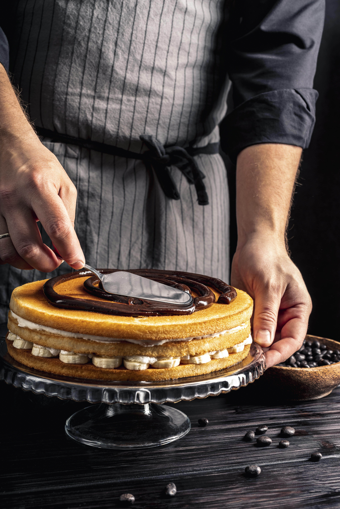

RECETAS DE PASTELERÍA
La pastelería es el arte de elaborar postres sofisticados y delicados que combinan sabor, técnica y creatividad. A través de la utilización de ingredientes de alta calidad como harina, azúcar, mantequilla y chocolate, la pastelería da vida a una variedad de delicias, desde pasteles y tartas hasta éclairs y macarons. Con un enfoque en la presentación y el detalle, la pastelería no solo satisface el gusto, sino que también crea experiencias visuales únicas y elegantes, elevando cada bocado a una celebración de dulzura y artesanía.
PIE DE LIMÓN
Para preparar un pie de limón clásico, comienza con la base. Necesitarás 200 gramos de galletas tipo Digestive o galletas María, trituradas en migas finas. Mezcla las migas con 100 gramos de mantequilla derretida hasta que la mezcla tenga una textura arenosa. Presiona la mezcla de galletas en el fondo y los lados de un molde para pie de 23 cm de diámetro, formando una base compacta y uniforme. Hornea en un horno precalentado a 180°C (350°F) durante 10 minutos. Deja enfriar mientras preparas el relleno.

Para el relleno de limón, en un bol grande, bate 4 yemas de huevo hasta que estén bien mezcladas. Agrega 400 gramos de leche condensada y 120 ml de jugo de limón fresco. Revuelve bien hasta que la mezcla esté suave y homogénea. Vierte el relleno sobre la base de galletas horneada y regresa al horno. Cocina a 180°C (350°F) durante 15-20 minutos, o hasta que el relleno esté cuajado pero aún ligeramente tembloroso en el centro. Deja enfriar a temperatura ambiente durante al menos 1 hora antes de refrigerar.
Para la cobertura, bate 250 ml de crema para batir con 2 cucharadas de azúcar y 1 cucharadita de extracto de vainilla hasta obtener picos firmes. Extiende la crema batida sobre el relleno enfriado del pie. Puedes decorar con ralladura de limón adicional si lo deseas.
Refrigera el pie de limón durante al menos 2 horas antes de servir para que los sabores se mezclen y la textura se asiente bien. ¡Disfruta de este refrescante y delicioso pie de limón, perfecto para cualquier ocasión!voluptatum sit!
CHEESECAKE
Para preparar un delicioso cheesecake clásico, comienza con la base. Necesitarás 200 gramos de galletas tipo Digestive o galletas María trituradas. Mezcla las migas de galleta con 100 gramos de mantequilla derretida hasta obtener una textura arenosa. Presiona esta mezcla en el fondo y los bordes de un molde para cheesecake desmontable de 23 cm, formando una capa uniforme. Hornea en un horno precalentado a 175°C (350°F) durante 10 minutos. Luego, retira la base del horno y deja enfriar mientras preparas el relleno.

Para el relleno, en un bol grande, bate 900 gramos de queso crema a temperatura ambiente con 200 gramos de azúcar y 1 cucharadita de extracto de vainilla hasta que la mezcla esté suave y cremosa. Añade 3 huevos grandes, uno a la vez, batiendo a baja velocidad para evitar incorporar aire. Incorpora 200 ml de crema agria (o crema para batir) y, si prefieres, 2 cucharadas de harina para una textura más firme. Mezcla bien hasta que todos los ingredientes estén completamente integrados.
Vierte la mezcla de queso crema sobre la base de galletas ya enfriada. Coloca el molde en una bandeja para hornear con agua caliente (un baño María) para ayudar a evitar que la superficie del cheesecake se agriete. Hornea a 160°C (325°F) durante 60-70 minutos, o hasta que el centro esté casi cuajado y aún ligeramente tembloroso. Apaga el horno, abre ligeramente la puerta y deja el cheesecake dentro durante 1 hora para que se enfríe gradualmente. Luego, retíralo del horno y deja enfriar completamente a temperatura ambiente. Refrigera durante al menos 4 horas, o preferiblemente toda la noche para que tome una buena textura.
Para una cobertura opcional, bate 200 ml de crema para batir con 2 cucharadas de azúcar hasta obtener picos firmes. Extiende la crema batida sobre el cheesecake frío y decora con frutas frescas, mermelada o sirope de tu elección.
Cuando estés listo para servir, desmonta el cheesecake del molde y transfiérelo a un plato de servir. Corta en porciones y disfruta de este exquisito y cremoso cheesecake.
OPERA
Para preparar una exquisita ópera de chocolate, comienza con el bizcocho de almendra. Necesitarás 150 gramos de harina de almendra, 150 gramos de azúcar glas y 5 huevos grandes. En un bol, mezcla la harina de almendra con el azúcar glas. Bate los huevos hasta que estén espumosos y hayan doblado su tamaño, luego incorpora suavemente la mezcla de harina y azúcar con una espátula. Vierte la masa en una bandeja para hornear engrasada y forrada con papel pergamino. Hornea en un horno precalentado a 180°C (350°F) durante 15-20 minutos, o hasta que el bizcocho esté dorado y firme al tacto. Una vez horneado, deja enfriar y corta el bizcocho en tres capas iguales.
A continuación, prepara el relleno de café. Para ello, necesitarás 250 gramos de mantequilla a temperatura ambiente, 250 gramos de azúcar glas, 200 gramos de chocolate negro derretido y 2 cucharadas de café expreso fuerte. Bate la mantequilla con el azúcar glas hasta obtener una textura suave y cremosa. Luego, incorpora el chocolate derretido y el café expreso, batiendo bien hasta obtener una mezcla homogénea. Extiende una capa de este relleno sobre una de las capas de bizcocho enfriado.
Para el ganache de chocolate, calienta 200 ml de crema para batir hasta que casi llegue a ebullición, y luego viértela sobre 200 gramos de chocolate negro picado. Remueve la mezcla hasta que el chocolate se derrita y quede suave. Deja enfriar un poco antes de usarlo.
También necesitarás preparar el glaseado de chocolate. Para ello, combina 100 gramos de chocolate negro con 100 gramos de crema para batir. Calienta la crema hasta que esté a punto de hervir, y luego viértela sobre el chocolate picado. Remueve hasta que obtengas una mezcla suave y uniforme.
Para montar la ópera, coloca una de las capas de bizcocho sobre un plato para servir y extiende una capa del relleno de café sobre él. Luego, coloca otra capa de bizcocho encima y cubre con una capa de ganache de chocolate. Repite el proceso con la última capa de bizcocho, extendiendo el relleno de café restante sobre ella. Refrigera el pastel durante al menos 2 horas para que las capas se asienten bien.
Una vez que el pastel esté bien refrigerado, cúbrelo con el glaseado de chocolate y alísalo con una espátula. Refrigera nuevamente hasta que el glaseado esté firme. Decora al gusto antes de servir.